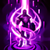

jioo
Главная
(current)
Чемпионы
Заклинания
Таланты
Призрак
Увеличивает скорость передвижения чемпиона и позволяет ему проходить сквозь бойцов в течение 10 секунд. Скорость передвижения постепенно увеличивается в течение 2 секунд до 28-45% (в зависимости от уровня чемпиона).
Исцеление
Восстанавливает вашему чемпиону и выбранному союзному чемпиону 90-345 здоровья (в зависимости от уровня чемпиона) и увеличивает их скорость передвижения на 30% на 1 секунду. Бойцам, недавно подвергавшимся Исцелению, восстанавливается в два раза меньше здоровья.
Ясность
Восстанавливает вашему чемпиону 50% от максимального запаса маны. Восстанавливает ближайшим союзникам 25% от максимального запаса маны.
Метка
Чемпион бросает снежок в указанном направлении. Попав во врага, он помечает его, дает истинное видение и позволяет совершить к нему рывок.
Очищение
Снимает все эффекты контроля и ослабления (за исключением подавления и подбрасывания) от заклинаний призывателя с вашего чемпиона и снижает длительность новых на 65% на 3 секунды.

Телепорт
Через 4.5 секунды телепортирует вашего чемпиона к указанному дружественному миньону, строению или тотему.
Кара
Наносит 390-1000 (в зависимости от уровня чемпиона) чистого урона выбранному эпическому, большому или среднему монстру или вражескому миньону. При использовании против монстра восстанавливает здоровье, в зависимости от максимального запаса здоровья чемпиона.
Барьер
Защищает вашего чемпиона от 115-455 урона (в зависимости от уровня чемпиона) в течение 2 секунд.
Воспламенение
Поджигает выбранного вражеского чемпиона, нанося ему 80-505 (в зависимости от уровня чемпиона) чистого урона в течение 5 секунд, делая его видимым и ослабляя эффекты лечения на время действия заклинания.
Изнурение
Изнуряет выбранного чемпиона, на 2,5 секунды уменьшая его скорость передвижения на 30%, а наносимый им урон - на 40%.
Скачок
Телепортирует вашего чемпиона на небольшое расстояние в направлении курсора.